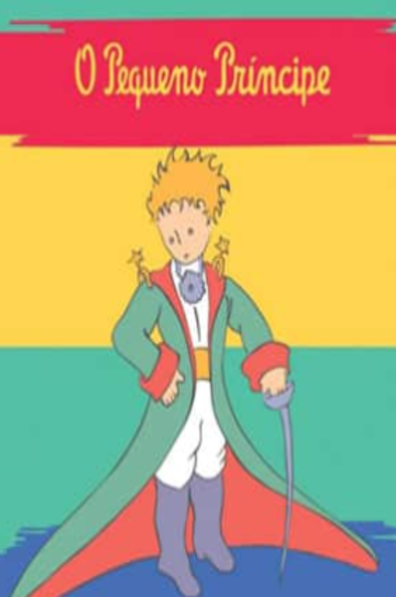

O pequeno principe
Publicado em 1943
Sinopse
A história acompanha um pequeno príncipe que viaja por diferentes planetas, conhecendo personagens que representam comportamentos humanos. Por meio de encontros poéticos e reflexivos, a obra aborda temas como amizade, amor, inocência e valores essenciais da vida, sendo um clássico da literatura infantil e universal.
Críticas
Os críticos elogiam a obra por sua poesia, simplicidade e profundidade filosófica. Destacam a capacidade do livro de transmitir mensagens universais sobre amor, amizade e valores humanos de forma acessível, tornando-o um clássico atemporal da literatura infantil e adulta.